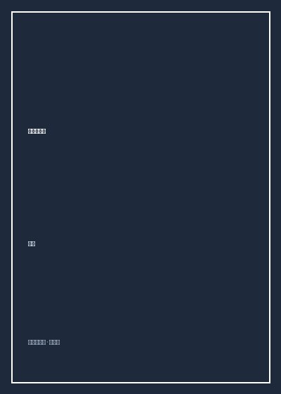

《沸腾十五年》

总体观点
中国互联网的第一个十五年是一部草根创业者在制度荒原与技术鸿沟中孤勇突围的英雄史诗。从张树新在中关村白颐路立起‘中国人离信息高速公路有多远’的巨幅广告牌，到求伯君在宾馆闭门敲出第一行WPS代码，一代怀揣理想主义的技术信徒凭借对硅谷浪潮的敏锐嗅觉，在没有风险投资、没有成熟网民甚至没有银行在线支付的荒漠中强行开凿出新大陆。
中国互联网商业模式的演进经历了从‘硅谷信徒式学徒’到‘本土化狠人野蛮进化’的蜕变。早期的四大门户完全照搬雅虎的展示广告模式，在2000年全球互联网泡沫破灭中集体陷入停牌退市边缘；然而拯救中国互联网的却是极具草根特色的移动梦网（SP）短信分成、网络游戏点卡与草根电商免费战，本土商业土壤倒逼中国公司孕育出独步全球的流量变现法则。
BAT（百度、阿里、腾讯）三巨头格局的奠定揭示了平台型生态的终极集权逻辑。搜索垄断信息入口、电商掌控交易资金流、社交软件绑死人际关系链，在激烈的资本整合与版权绞杀中，中国互联网从群雄逐鹿的自由拓荒时代，无可逆转地步入了资本意志主导的巨头割据时代，并为移动互联网的更大风暴埋下了引线。
核心观点
-
1. 张树新与瀛海威的悲情拓荒
1995年张树新创立瀛海威，抵押房产在北京中关村立起标志性广告牌。作为中国互联网最早的布道者，瀛海威承担了向政府、公众科普互联网的沉重历史成本，却因过早遭遇电信垄断与资本反噬黯然落幕。
林军记录张树新当年带领团队在全国跑马圈地建立拨号节点的理想主义狂热，以及最后因与大股东中国兴发集团战略冲突被迫离职的苍凉泪水。 -
2. 三大门户纳斯达克流血上市与纳斯达克严冬
2000年王志东的新浪、张朝阳的搜狐与丁磊的网易相继在纳斯达克敲钟。然而上市数月后全球互联网泡沫轰然破灭，网易股价跌破1美元惨遭停牌审查，王志东被新浪董事会无情清洗，展现了国际资本的冰冷残酷。
回顾丁磊在最绝望时刻想要作价卖掉网易却无人接盘，随后段永平以不到1美元的极低价格在公开市场抄底网易股票狂赚百倍的传奇资本暗战。 -
3. 移动梦网（Monternet）与SP挽救危局
2001年中国移动推出的‘移动梦网’短信分成平台，如同一场甘霖拯救了命悬一线的中国互联网公司。一条一毛钱的短信、手机天气预报与铃声下载，让搜狐、网易瞬间扭亏为盈，实现了硅谷未曾见过的自造血奇迹。
记录网易与搜狐凭借移动短信息业务在短短一年内净利润暴增数倍，股价狂飙数十倍走出停牌阴霾，丁磊一跃登顶中国大陆首富宝座的惊天逆转。 -
4. 淘宝对决eBay易趣的免费闪击战
2003年跨国巨头eBay携数亿美元资本兼并易趣垄断中国C2C电商90%份额。马云在杭州湖畔花园秘密组建淘宝团队，祭出‘三年免费’狠招，并联合本地中小网站绕开eBay对门户广告的排他性封锁，以蚂蚁雄兵彻底击溃跨国大鳄。
eBay首席执行官惠特曼曾断言‘免费不是一种商业模式’并扬言十八个月内解决战斗，但三年后易趣市场份额萎缩至个位数，被迫退出中国市场将王座拱手让与淘宝。 -
5. 陈天桥与盛大《传奇》的点卡造富风暴
陈天桥用借来的50万美元豪赌韩国网络游戏《热血传奇》，开创了依靠全国数以万计网吧销售纸质点卡的离线分销网络，单月现金流破千万，颠覆了中国传统软件与娱乐产业的财富天花板。
还原当年全国网吧几乎清一色闪烁着《传奇》砍怪画面的盛况，31岁的陈天桥因游戏业务在纳斯达克敲钟并以身家百亿问鼎首富，引发全社会对网游沉迷与虚拟经济的空前大讨论。
全书结构
-
第一章 拓荒时代（1995-1997）
重温中国互联网启蒙时刻：瀛海威在中关村树旗、马云在杭州创立中国黄页、四通利方论坛崛起与求伯君张小龙早期软件开发传奇。
描写当年马云背着黑色公文包在国家经贸委各部门敲门推销互联网黄页、被诸多官员视为‘大骗子’的艰辛创业剪影。 -
第二章 门户崛起（1998-1999）
记录风投资本涌入中国、王志东缔造新浪模式VIE架构、张朝阳带搜狐风光回国、丁磊南下广州创立网易与马化腾开发OICQ的前夜。
细述马化腾早期在深圳华强北逼仄办公室里假扮女网友陪聊以吸引种子用户、服务器带宽告急险些将OICQ以60万元贱卖的惊险往事。 -
第三章 泡沫与严冬（2000-2002）
复盘纳斯达克科技股大崩盘惨烈景象：三大门户破发退市阴影、王志东突遭新浪免职内幕，以及中国移动‘移动梦网’拯救行业的转折点。
揭秘新浪董事会联合外部资本在数小时内突袭改组管理层、将创始人王志东扫地出门的资本清洗全过程。 -
第四章 游戏与电商（2003-2004）
全景展现陈天桥靠《传奇》开创点卡帝国、九城朱骏代理《魔兽世界》、非典疫情刺激淘宝破土与携程如家快捷酒店连锁上市潮。
详细记录淘宝在非典隔离期间员工在家靠固定电话完成首批交易上线，以及支付宝担保交易模式诞生背后的信任破冰。 -
第五章 搜索与资本狂飙（2005-2006）
描绘李彦宏带领百度纳斯达克创造上市首日涨幅神话、杨致远撮合雅虎十亿美元注资阿里巴巴，以及奇虎周鸿祎从3721反水杀入免费杀毒。
回顾百度2005年8月5日在纳斯达克开盘从27美元一路狂飙至150美元、造就数百名千万富翁工程师的疯狂狂欢之夜。 -
第六章 巨头割据与移动前哨（2007-2009）
检视开心网偷菜与校内网SNS狂欢、腾讯QQ全业务帝国的版权争议与生态垄断，以及3G牌照发放前夕移动互联网破土的躁动。
分析全网千万白领半夜定闹钟在开心网偷菜引发的注意力黑洞，以及巨头悄然布局智能手机移动端入口的历史转折点。